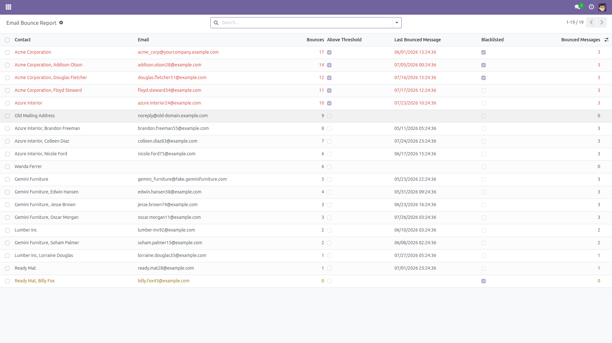
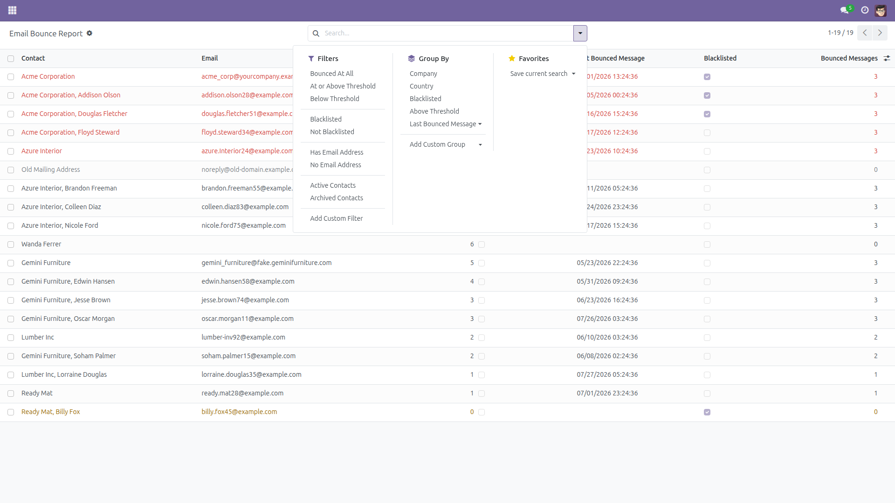
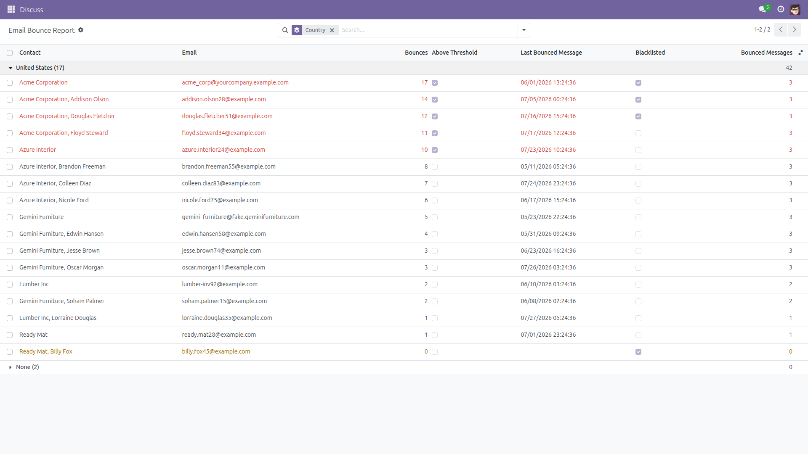
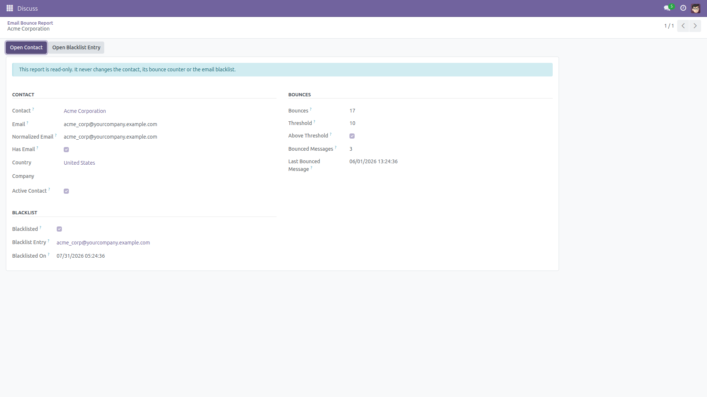
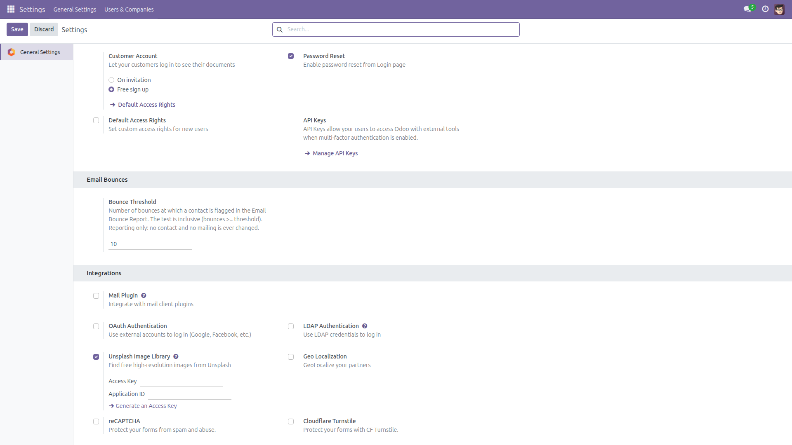

Email Bounce Report
Odoo counts bounces per contact and quietly stops treating a bouncing address as
usable — but it never shows you who is bouncing. This adds the missing
screen, and changes nothing at all.
The problem
Every contact in Odoo carries a Bounce counter
(res.partner.message_bounce). Odoo increments it when an address bounces
and resets it when that address answers again. Odoo's own mail code treats
10 bounces as the point where an address is dead.
That counter is buried on the contact form, one contact at a time. There is no list,
no filter and no total — so a mailing list decays invisibly, and nobody finds out
until the numbers stop making sense.
What this module adds
- A read-only Email Bounce Report listing every contact that has a
bounce counter above zero or sits on the email blacklist.
- The contact, the exact address stored on it, and the normalized address Odoo
actually matches against the blacklist.
- The standard bounce counter, plus an Above Threshold
flag using an inclusive
>= test against a threshold you set in Settings
(default 10).
- The date of the most recent message to that contact that is recorded as bounced,
and how many such messages survive.
- Whether the address is on the active email blacklist, and when it was
put there — with a button that opens the blacklist entry.
- Filters for bounced at all, at or above threshold, below threshold, blacklisted,
not blacklisted, with or without an address, active or archived contacts.
- Group by company, country, blacklist status, threshold status or bounce month,
and export to spreadsheet with the standard Odoo export.
This module never changes anything
It owns no data of its own. The report is a single read-only database view over
information Odoo already stores, so:
- it never edits a contact and never resets a bounce counter;
- it never adds or removes a blacklist entry, and never opts anyone
in or out of a mailing;
- it never sends, retries or cancels an email;
- it only links out — to the contact, and to the blacklist entry.
The report model is granted read access only, to Settings / Administration users, so
even an administrator cannot write through it.
Honest limitations
- There is no true "bounce timestamp" in Odoo, on any supported series.
Odoo records the bounce on the message notification, and that model
(
mail.notification) is declared without access logging, so it carries no
date at all. The Last Bounced Message column therefore shows the date of the
message that bounced — not the moment the bounce came back. Nothing is
invented: when no bounced message survives, the column is simply empty.
- The Bounced Messages count can be lower than the bounce counter. Odoo
garbage-collects old notifications, and the counter is shared by every record that
carries the same address.
- The bounce counter itself is maintained by Odoo, not by this module. It only shows
what is already there. If your incoming mail server is not configured to route
bounces back into Odoo, the counter stays at zero and so does this report.
- Contacts with no email address are listed if they carry a bounce counter (an address
can be cleared after the fact) and are flagged accordingly. They can never match a
blacklist entry.
- The report mirrors Odoo's own multi-company rule on contacts: it will never show a
contact that the standard Contacts list would hide from that user.
- The report reads live data every time you open it, so it is always current, but on a
database with a very large number of contacts the first page can take a moment.
There is no cache and no scheduled job to go stale.
Screenshots
The report: bounce counts, threshold flags and
blacklist status in one list. Red = at or above the threshold, orange = blacklisted,
grey = archived contact.

Ready-made filters and groupings.

Grouped by country — company, blacklist status
and threshold status work the same way.

One contact in detail, with buttons that link out to
the contact and to the blacklist entry.

The threshold lives in General Settings.

Installation
- Copy the
mail_bounce_report folder into your Odoo add-ons path.
- Log in as an administrator and turn on developer mode
(Settings → General Settings → Developer Tools).
- Open Apps, click Update Apps List, then search for
Email Bounce Report and press Install.
- The only dependency is Odoo's standard Discuss (
mail) module,
which is installed on virtually every database.
Configuration
- Go to Settings → General Settings and find the
Email Bounces section.
- Set Bounce Threshold to the number of bounces at which you want a
contact flagged. The test is inclusive: a contact with exactly that
many bounces is flagged.
- The default is 10, the same limit Odoo's own mail code uses before it
considers an address dead. Leave it alone unless you want to be stricter.
- Press Save. The report picks the new threshold up immediately — no
upgrade, no reload.
- Changing the threshold changes the report only. It never changes a contact and never
changes who Odoo mails.
Usage
- Open Settings → Technical → Discuss → Email Bounce Report
(developer mode shows the Technical menu).
- The list opens on every contact that is bouncing or blacklisted, worst first. Clean
contacts are not listed at all.
- Apply At or Above Threshold to see only the addresses worth acting on,
or Blacklisted / Not Blacklisted to see which dead
addresses are still being mailed.
- Type a number into the Bounces (at least) search field for an ad-hoc cut-off
without touching the configured threshold.
- Group by Company or Country to find a whole segment
that is decaying, and use the standard export to hand the list to whoever cleans it.
- Open a line and use Open Contact or Open Blacklist Entry to act on
it. Any correction you make happens there, on the real record — deliberately, not
as a side effect of running a report.